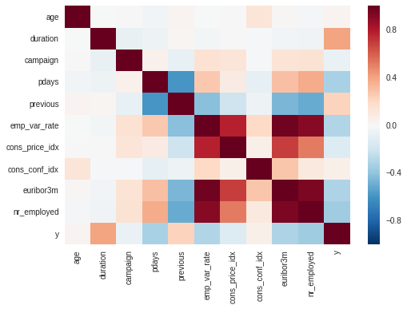
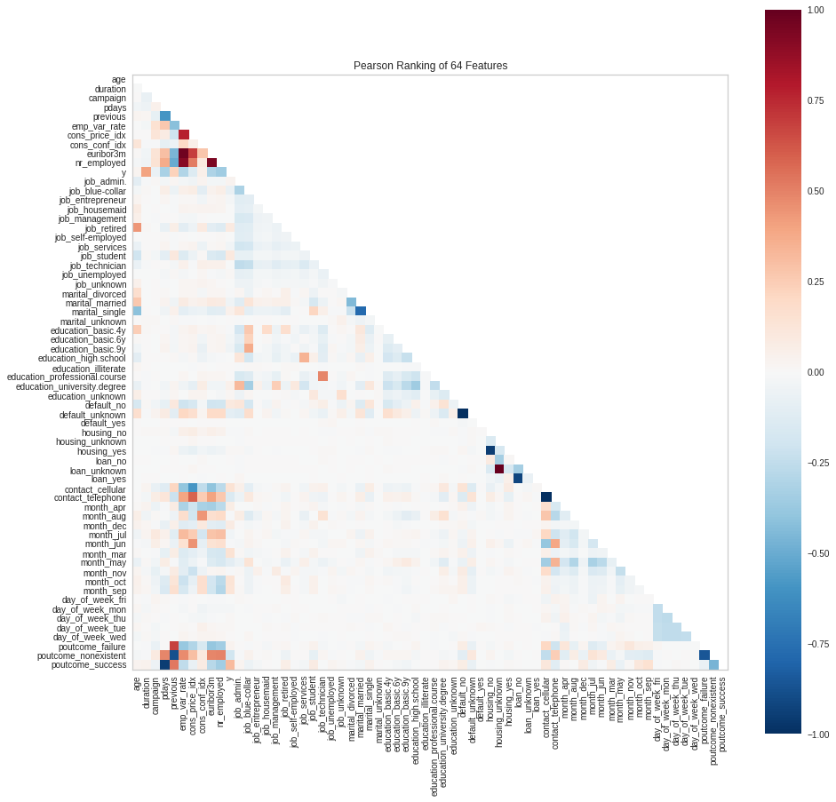

Lesson 4 Machine Learning Modeling on AWS
Watch Lesson 4: Machine Learning Modeling on AWS Video
Pragmatic AI Labs

This notebook was produced by Pragmatic AI Labs. You can continue learning about these topics by:
- Buying a copy of Pragmatic AI: An Introduction to Cloud-Based Machine Learning from Informit.
- Buying a copy of Pragmatic AI: An Introduction to Cloud-Based Machine Learning from Amazon
- Reading an online copy of Pragmatic AI:Pragmatic AI: An Introduction to Cloud-Based Machine Learning
- Watching video Essential Machine Learning and AI with Python and Jupyter Notebook-Video-SafariOnline on Safari Books Online.
- Watching video AWS Certified Machine Learning-Speciality
- Purchasing video Essential Machine Learning and AI with Python and Jupyter Notebook- Purchase Video
- Viewing more content at noahgift.com
Load AWS API Keys
Put keys in local or remote GDrive:
cp ~/.aws/credentials /Users/myname/Google\ Drive/awsml/
Mount GDrive
from google.colab import drive
drive.mount('/content/gdrive', force_remount=True)
Mounted at /content/gdrive
import os;os.listdir("/content/gdrive/My Drive/awsml")
['kaggle.json', 'credentials', 'config']
Install Boto
!pip -q install boto3
Create API Config
!mkdir -p ~/.aws &&\
cp /content/gdrive/My\ Drive/awsml/credentials ~/.aws/credentials
Test Comprehend API Call
import boto3
comprehend = boto3.client(service_name='comprehend', region_name="us-east-1")
text = "There is smoke in San Francisco"
comprehend.detect_sentiment(Text=text, LanguageCode='en')
{'ResponseMetadata': {'HTTPHeaders': {'connection': 'keep-alive',
'content-length': '160',
'content-type': 'application/x-amz-json-1.1',
'date': 'Thu, 22 Nov 2018 00:21:54 GMT',
'x-amzn-requestid': '9d69a0a9-edec-11e8-8560-532dc7aa62ea'},
'HTTPStatusCode': 200,
'RequestId': '9d69a0a9-edec-11e8-8560-532dc7aa62ea',
'RetryAttempts': 0},
'Sentiment': 'NEUTRAL',
'SentimentScore': {'Mixed': 0.008628507144749165,
'Negative': 0.1037612184882164,
'Neutral': 0.8582549691200256,
'Positive': 0.0293553676456213}}
4.1 AWS ML Systems Overview
Machine Learning at AWS
- AWS ML Services Video
- Thousands of Engineers working on Machine Learning at AWS
What is Machine Learning?

- Subset of AI
- Deep Learning is subset of Machine Learning
What can Machine Learning Do?
- Make predictions
- Optimize utility functions
- Extract hidden data structures
- Classify data
Machine Learning Use Cases
Fraud Detection
- Mine data
- Identify hidden patterns and create labels (unsupervised learning)
- Train model
- Flag transaction as fraudulent
Content Personalization
- Use predictive analytics to recommend items (recommendation systems)
Target Marketing
- Use custom activity to choose revelant email campaigns
- cross-selling
- upselling
Categorization
- Matching hiring managers and resumes
- Unstructured content –> Machine Learning Model –> Categorized documents
Customer Service
- Analyze social media traffic to route customers to customer support
- Predictive routing of customer emails
Machine Learning Concepts

Combination of Methods and Systems
- Predict
- Predict new data based on observed data
- Extract
- Extract hidden structure from data
- Summarize
- Summarize data into executive brief
- Optimize
- Optimize an action, given a cost function and observed data
- Adapt
- Adapt based on observed data
Machine Learning Types

- Supervised Learning
- Labels are known for inputs and outputs
- Model “learns” to generalize from data (records)
- Human needs to tell model which outputs are correct (to train model)
- Input –> Model –> Output/Prediction
- Classification (Category like “red”, “blue”) and Regression (Numerical i.e. Housing price)
- Unsupervised Learning
- Labels are not known
- Lables “hidden structures” are discovered
- Self-organization
- Clustering
- Reinforcement Learning
- Model learns by interacting with environment
- Learns to take action to maximize total reward
- Inspired by behavioral biology
Frameworks & Infrastructure
- All Major frameworks
- Apache MXNet
- Caffe and Caffe 2
- Tensorflow
Machine learning platforms
- Fully managed platform for building models with own data
- Apache Spark on EMR
- SparkML (25 PetaByte models, Zillow and Netflix)
- Sagemaker
- Amazon Machine Learning
API-driven services
Examples include:
- Comprehend (NLP)
- Rekognition (Computer Vision)
Models
- Can be stored in S3
- Can be A/B tested
Optimized Instances & Machine Images
- Deep Learning AMIs
- Containers
4.2 Feature Engineering
Feature Engineering Overview
- Feature is an attribute used in a prediction model
- Feature engineering is the creation and curation of these attributes
Explore Features
import pandas as pd
import seaborn as sns
df = pd.read_csv("https://raw.githubusercontent.com/noahgift/aws-ml-guide/master/data/banking.csv")
df.head()
| age | job | marital | education | default | housing | loan | contact | month | day_of_week | ... | campaign | pdays | previous | poutcome | emp_var_rate | cons_price_idx | cons_conf_idx | euribor3m | nr_employed | y | |
|---|---|---|---|---|---|---|---|---|---|---|---|---|---|---|---|---|---|---|---|---|---|
| 0 | 44 | blue-collar | married | basic.4y | unknown | yes | no | cellular | aug | thu | ... | 1 | 999 | 0 | nonexistent | 1.4 | 93.444 | -36.1 | 4.963 | 5228.1 | 0 |
| 1 | 53 | technician | married | unknown | no | no | no | cellular | nov | fri | ... | 1 | 999 | 0 | nonexistent | -0.1 | 93.200 | -42.0 | 4.021 | 5195.8 | 0 |
| 2 | 28 | management | single | university.degree | no | yes | no | cellular | jun | thu | ... | 3 | 6 | 2 | success | -1.7 | 94.055 | -39.8 | 0.729 | 4991.6 | 1 |
| 3 | 39 | services | married | high.school | no | no | no | cellular | apr | fri | ... | 2 | 999 | 0 | nonexistent | -1.8 | 93.075 | -47.1 | 1.405 | 5099.1 | 0 |
| 4 | 55 | retired | married | basic.4y | no | yes | no | cellular | aug | fri | ... | 1 | 3 | 1 | success | -2.9 | 92.201 | -31.4 | 0.869 | 5076.2 | 1 |
5 rows × 21 columns
Correlation Heatmap
sns.heatmap(df.corr())
<matplotlib.axes._subplots.AxesSubplot at 0x7fd3ae31b4a8>

Yellowbrick Road Feature Rank
Can use yellowbrick road to visualize feature importance
from yellowbrick.features import Rank2D
visualizer = Rank2D(algorithm="pearson", size=(1080, 1080))
visualizer.fit_transform(pd.get_dummies(df))
visualizer.poof()

Demo AWS Machine Learning Service
-
Create Training Datasource (Steps Below)
-
Prepare Data ** - Create S3 Bucket & Create folder**

** - Upload CSV files**

** - Create Data Source **

Infer the Schema
Amazon Machine Learning Service infers the proper schema

Select the Target

4.3 Train a Model
Create 70/30 Split and Train Model in sklearn
banking_df = pd.read_csv("https://raw.githubusercontent.com/noahgift/aws-ml-guide/master/data/banking.csv")
banking_df.columns #y column will be predicted
Index(['age', 'job', 'marital', 'education', 'default', 'housing', 'loan',
'contact', 'month', 'day_of_week', 'duration', 'campaign', 'pdays',
'previous', 'poutcome', 'emp_var_rate', 'cons_price_idx',
'cons_conf_idx', 'euribor3m', 'nr_employed', 'y'],
dtype='object')
One Hot Encode with sklearn
from sklearn.model_selection import train_test_split
from sklearn.linear_model import LogisticRegression
from sklearn.feature_extraction import DictVectorizer
dvec = DictVectorizer(sparse=False)
vectorized_banking_df = dvec.fit_transform(df.transpose().to_dict().values())
train, test = train_test_split(vectorized_banking_df, test_size=0.3)
print(f" 70% Split data structure: {type(train)} and shape: {train.shape}")
print(f" 30% Split data structure: {type(test)} and shape: {test.shape}")
70% Split data structure: <class 'numpy.ndarray'> and shape: (28831, 64)
30% Split data structure: <class 'numpy.ndarray'> and shape: (12357, 64)
Use Logistic Regression to train model on 70% train data
from sklearn.linear_model import LogisticRegression
X = train[:,:-1] #drop the predict 'y'
print(f" Drop last column in X {X.shape}")
Y = train[:, -1] #select only predict variable 'y'
print(f" Select last column in Y {Y.shape}")
model = LogisticRegression()
model.fit(X, Y)
Drop last column in X (28831, 63)
Select last column in Y (28831,)
LogisticRegression(C=1.0, class_weight=None, dual=False, fit_intercept=True,
intercept_scaling=1, max_iter=100, multi_class='warn',
n_jobs=None, penalty='l2', random_state=None, solver='warn',
tol=0.0001, verbose=0, warm_start=False)
Demo AWS Machine Learning Service

4.4 Evaluate a Model
Classification Model Evaluation Metrics
-
Precision
-
Recall
-
F1: harmonic mean of precision and recall
-
AUC (Area Under the Curve)
Measures the ability of a model to predict higher scores for positive observations vs negative observations.

Using Yellowbrick road to evaluate model
from yellowbrick.classifier import ClassificationReport
from sklearn.linear_model import LogisticRegression
visualizer = ClassificationReport(model)
visualizer.fit(X, Y)
visualizer.score(X, Y)
visualizer.poof()

Generate Cross-Validated Precision and Recall
from sklearn.model_selection import cross_val_predict
from sklearn.metrics import precision_score, recall_score
y_train_pred = cross_val_predict(model, X, Y, cv=3)
Precision
precision_score(Y, y_train_pred)
0.6702619414483821
Recall
recall_score(Y, y_train_pred)
0.3987167736021998
F1 Score
from sklearn.metrics import f1_score
f1_score(Y, y_train_pred)
0.5000000000000001
AUC
from sklearn.metrics import roc_auc_score
roc_auc_score(Y, y_train_pred)
0.68679871859545
Demo AWS Machine Learning Service
Evaluatate Model

Explore Performance

- Evaluating Model
- Explore Performance
4.5 Tune a Model
[Demo] AWS Machine Learning Service
- show tradeoffs
4.6 Understand ML Inference
[Demo] AWS Machine Learning Service
- Refers to prediction
- Sagemaker can auto-scale inference endpoints
- Also Amazon Elastic Inference service:
- Can save up to 75% of cost of inference (predictions)
- Attaches to Sagemaker and EC2
4.7 Understand Deep Learning
Intro to Deep Learning
Intro to Deep Learning on AWS Video
Brief History of Neural Networks
- 1950-1998: Academic Activity
- 1998-2007: AI Winter
- 2007-Today: “The GPU Era” (Moore’s law over 2005)
- Deep Learning is a “multi-layered” feed-forward neural network
Perform Storm for Deep Learning
- Cloud Computing
- End of Moore’s Law (forces more GPU adoption)
- Elastic Storage and Compute
- Proliferation of data: social networks, etc
What is a Neural Network?

- Can be “Deep” Neural Network (multi-layered), but optional
- Simple functions than be collectively trained (in layers) to learn complex functions
- Input Layer –> Hidden Layer(s) —> Output Layer

- RNN is used sequences like:
- text
- speech
- translation
Deep Learning Use Cases
- Text analysis (NLP)
- insider trading
- sentiment analysis
- regulatory compliance
- brand affinity
- intent analysis
- Time Series
- financial
- log analysis
- supply chain
- IoT
- Recommendation Engines
- Social Meida
Deep Learning AMIs
- Three Styles of Deep Learning AMIs
- Conda-based AMI
- Base AMI
- AMIs with source code
- Available “Pay as you Go” (On Demand)
- Available “Spot Instance”
- Can perform “Multi-GPU training”
- Preloaded with Frameworks